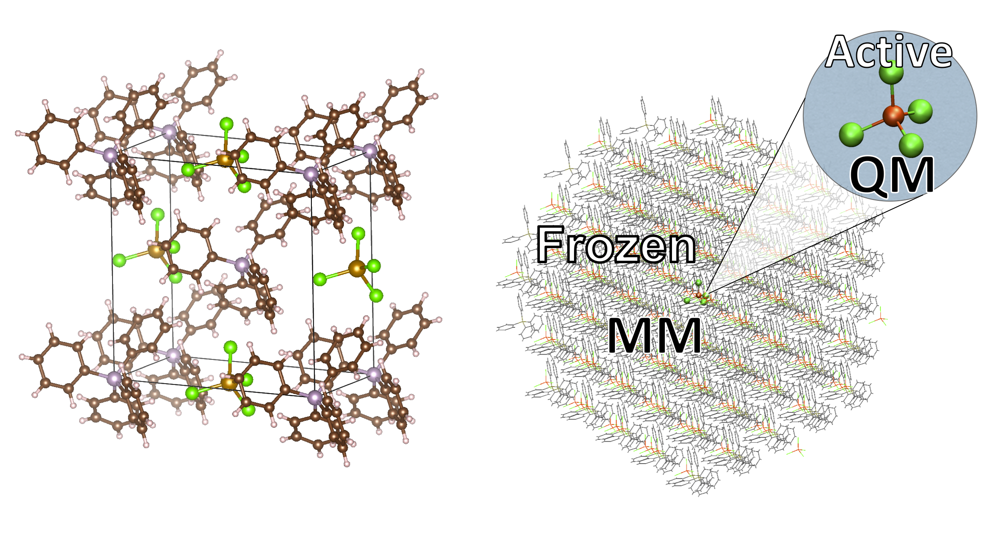
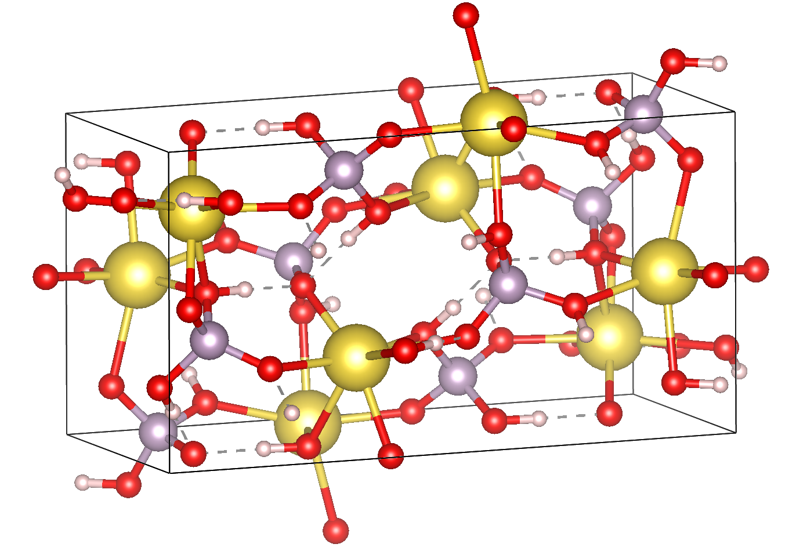

MOLCRYS: Automatic QM/MM for Molecular Crystals¶
The molecular crystal QM/MM method in ASH is based on the work described in articles by Bjornsson et al.
The method allows one to easily incorporate solid-state effects into quantum chemical calculations of molecules via an automatic QM/MM approach for molecular crystals. The protocol involves read-in of a crystallographic information file (CIF) directly and the creation of either a spherical cluster or supercell of the molecular crystal. By automatic preparation of a nonbonded forcefield for each molecular fragment present in the crystal and division of the system into a central active QM-region and a frozen MM environment, a full-fledged forcefield is not required (typically not available for small molecules, especially coordination complexes). The method then allows one to do electrostatically embedded QM/MM geometry optimizations, electrostically embedded single-point property calculations (e.g. NMR, EPR, excited state spectra, Mössbauer etc.) and vibrational spectra via QM/MM numerical frequencies (Currently missing: IR/Raman intensities ). Minimum energy paths can be calculated and saddle-points (“transition states”) located by a state-of-the-art Nudged Elastic Band algorithm, available via the Knarr library.
Any QM-code that has an interface in ASH can in principle be used for QM/MM geometry optimizations, with any QM-method within the program (analytical gradient strongly recommended for optimizations). For the charge-iteration step, ORCA and xTB are the currently supported QM codes, while all QM codes listed in QM Interfaces can be used for geometry optimizations.
{kind=link}
The basic automatic protocol:
Critical features of the implementation:
Limitations:
Features to be implemented:
MOLCRYS function: Creating a cluster¶
def molcrys(cif_file=None, xtl_file=None, xyz_file=None, cell_length=None, cell_angles=None,
fragmentobjects=[], theory=None, numcores=1, chargemodel='', clusterradius=None,
shortrangemodel='UFF_modH', auto_connectivity=False, shiftasymmunit=False, cluster_type='sphere',
supercell_expansion=[3,3,3])
The purpose of the molcrys function is to create a cluster fragment (either spherical or supercell) from a file containing periodic information and to define a nonbonded MM forcefield for the whole system. The cluster fragment (an ASH fragment) can then be subjected to a QM/MM geometry optimization. There are 3 inputfile options: cif_file, xtl_file or xyz_file. The CIF-file and XTL-file (created by VESTA) contain fractional coordinates and the unit-cell shape and this is automatically parsed by ASH. If you provide an XYZ-file then the file must contain real-space coordinates in Å for a whole unitcell and additionally the length and angles of the unitcell have to be provide as well, using cell_length and cell_angles keywords.
The following keyword arguments must be provided:
fragmentobjects: list of fragment-types
theory: ASH QMTheory object
chargemodel: String. Which atomchargemodel to use for the nonbonded forcefield. Options: ‘CHELPG’, ‘Hirshfeld’, ‘CM5’, ‘NPA’, ‘Mulliken’.
shortrangemodel: String. What model to describe the short-range potential. Currently, the potential is Lennard-Jones with parameter options: ‘UFF_all’, ‘UFF_modH’
Optional keyword arguments.
auto_connectivity: Boolean(True/False). Whether to figure out the connectivity automatically or not. Default: False
numcores: number of cores to use. Default: 1
cluster_type: String. Options are: ‘sphere’ and ‘supercell’. Default: ‘sphere’
clusterradius: Integer. Radius of cluster sphere. Necessary if cluster_type=’sphere’
supercell_expansion: List of integers. How many times to expand the unitcell in x,y,z directions if using cluster_type=’supercell’
Input-file examples:
#3 input-file options
# From CIF-file:
Cluster = molcrys(cif_file="cif_filename.cif", fragmentobjects=[mainfrag,counterion], theory=ORCAcalc,
clusterradius=32, chargemodel='CM5', shortrangemodel='UFF_all')
# From XTL-file:
Cluster = molcrys(xtk_file="xtl_filename.xtl", fragmentobjects=[mainfrag,counterion], theory=ORCAcalc,
clusterradius=32, chargemodel='CM5', shortrangemodel='UFF')
# From XYZ-file:
Cluster = molcrys(xyz_file="xyz_filename.xyz", cell_length=[10.1,12.2,10.1], cell_angles=[90,90,90],
fragmentobjects=[mainfrag,counterion], theory=ORCAcalc,
clusterradius=32, chargemodel='CM5', shortrangemodel='UFF')
Cluster-sphere or supercell examples:
#2 types of cluster-shapes (here using CIF-file)
# Spherical cluster (with 32 Å radius)
Cluster = molcrys(cif_file="cif_filename.cif", fragmentobjects=[mainfrag,counterion], theory=ORCAcalc,
clusterradius=32, chargemodel='CM5', shortrangemodel='UFF_all')
# 3x3x3 Supercell
Cluster = molcrys(cif_file="cif_filename.cif", fragmentobjects=[mainfrag,counterion], theory=ORCAcalc,
cluster_type='supercell', supercell_expansion=[3,3,3], chargemodel='CM5', shortrangemodel='UFF_all')
MOLCRYS Example: Spherical QM/MM Cluster setup from CIF-file¶
Here we show how to use the MOLCRYS code for an example Na+ [H2PO4] - crystal. This molecular crystal contains 2 fragment-types: Na+ and H2PO4-
{kind=link}
Here we will only do the cluster setup and the charge-iteration. A Python script should be created and then the ASH and MOLCRYS modules should be imported.
The script should then just call one function, called molcrys at the bottom of the script:
Cluster = molcrys(cif_file=cif_file, fragmentobjects=fragmentobjects, theory=ORCAcalc,
numcores=numcores, clusterradius=sphereradius, chargemodel=chargemodel, shortrangemodel=shortrangemodel)
Calling molcrys will create the cluster and return a Cluster object that can be used directly (also written to disk). This is the only function of this script but as we can see, there are a number of keyword arguments, with values that are variables of multiple types. It is usually more convenient to define first the necessary variables in multiple lines above this command. In the full script, seen below, a number of variables are defined, following standard Python syntax.
ASH-specific variables is the creation of the ORCAcalc object (instance of the ASH ORCATheory class), the creation of mainfrag and counterfrag1 objects (instances of ASH Fragmenttype class). The variables are then passed as keyword arguments to the molcrys function at the bottom of the script.
from ash import *
from molcrys import *
settings_ash.init()
#######################
# MOLCRYS INPUT #
#######################
cif_file="nah2po4_choudhary1981.cif"
sphereradius=35
#Number of cores available to ASH. Used by QM-code or ASH.
numcores=12
#Theory level for charge iterations
orcadir='/opt/orca_4.2.1'
orcasimpleinput="! BP86 def2-SVP def2/J Grid5 Finalgrid6 tightscf"
orcablocks="%scf maxiter 200 end"
ORCAcalc = ORCATheory(orcadir=orcadir, orcasimpleinput=orcasimpleinput, orcablocks=orcablocks, nprocs=numcores)
#Chargemodel. Options: CHELPG, Hirshfeld, CM5, NPA, Mulliken
chargemodel='Hirshfeld'
#Shortrange model. Usually Lennard-Jones. Options: UFF_all, UFF_modH
shortrangemodel='UFF_modH'
#Define fragment types in crystal: Descriptive name, formula, charge and multiplicity
mainfrag = Fragmenttype("Phosphate","PO4H2", charge=-1,mult=1)
counterfrag1 = Fragmenttype("Sodium","Na", charge=1,mult=1)
#Define list of fragmentobjects. Passed on to molcrys
fragmentobjects=[mainfrag,counterfrag1]
#Modify global connectivity settings (scale and tol keywords)
settings_ash.scale=1.0
settings_ash.tol=0.3
# Modified radii to assist with connectivity.
#Setting radius of Na to almost 0. Na will then not bond
eldict_covrad['Na']=0.0001
print(eldict_covrad)
#Calling molcrys function and define Cluster object
Cluster = molcrys(cif_file=cif_file, fragmentobjects=fragmentobjects, theory=ORCAcalc, auto_connectivity=True
numcores=numcores, clusterradius=sphereradius, chargemodel=chargemodel, shortrangemodel=shortrangemodel)
We point to the CIF file (should be present in same directory as script) that should be read and define a sphereradius. We also define the number of cores available (should later match that defined in the job-submission script), that both ORCA and ASH may use in their parallelization. Next, an ORCA theory object is defined where we set the path to ORCA and define the structure of the inputfile used when running ORCA calculations.
The chargemodel and shortrangemodel variables are used to define keywords that molcrys will recognize. The chargemodel defines how to derive the pointcharges for the MM cluster for the QM-MM electrostatic interaction. Available chargemodels are: CHELPG, Hirshfeld, CM5, NPA, Mulliken
The shortrangemodel defines the short-range interactions between QM and MM atoms (other than the electrostatic). Currently, only the UFF Lennard-Jones model is available that uses element-specific parameters (from the Universal Forcefield, UFF) to set up Lennard-Jones potentials between all atoms. The “UFF_modH” keyword is currently recommended that uses available parameters for all elements except the LJ parameters for H are set to zero to avoid artificial repulsion for acidic H-atoms.
Next, we have to define the fragments present in the crystal. In the future, this may become more automated. Thus, we define a fragment, called mainfrag, that is our primary interest. Here, this is the H2PO4- anion, while the counterion Na+ ion is of less interest, here labelled counterfrag1. This distinction between fragments means that the mainfrag will be at the center of the cluster and charge-iterations are currently only performed for mainfrag. It also means that the charge-iterations are only performed for mainfrag. For each molecular fragment, we define an object of class Fragmenttype with a name e.g. “Phosphate”, elemental formula, e.g. “PO4H2”, and define the charge and multiplicity of that fragment. The elemental formula is crucial as from the formula the total nuclear charge is calculated which is used to identify these fragments in the molecular crystal. Once the fragments are defined we group them together in the following order as a list called fragmentobjects: fragmentobjects=[mainfrag,counterfrag1]
Finally, the script shows how the connectivity can be modified in order for the fragment identification to succeed. The fragment identification works by finding what atoms are connected according to the formula:
Thus, if the distance between atoms A and B is less than the sum of the elemental covalent radii (which can be scaled by a parameter scale or shifted by a parameter tol) then the atoms are connected. Using default parameters of the element radii (Alvarez 2008), the default scaling of 1.0 and a tolerance of 0.1 (global scale and tol parameters are defined in settings_ash file) works in many cases. For the Na+ [H2PO4] - crystal, however, that features strong hydrogen-bonding and the ionic Na+ fragment, we have to make some modifications. In the script above, we thus have to set the tol parameter to 0.3 and change the radius of the Na+ ion to a small value. The covalent radii of the elements are stored in a global Python dictionary, eldict_covrad which can be easily modified as shown and its contents printed. In the future, the radius of the Na may by default be set to a small number.
Unlike the other variables, the settings_ash.scale, settings_ash.tol and eldict_covrad are global variables (already defined but can be modified) that molcrys and ASH will have access to.
June 2020: New Automatic Connectivity feature: auto_connectivity=True. When this feature is used, Molcrys scans through different tolerances (0.1 to 0.7 in 0.1 steps) until it finds a connectivity that gives complete assignment. This feature should work most of the time.
The other variables defined in the script have to be passed as values to the respective keyword arguments of the molcrys function:
Cluster = molcrys(cif_file=cif_file, fragmentobjects=fragmentobjects, theory=ORCAcalc, auto_connectivity=True
numcores=numcores, clusterradius=sphereradius, chargemodel=chargemodel, shortrangemodel=shortrangemodel)
These are currently the only arguments that can be provided to the molcrys function, with the exception that instead of a cif_file argument, an xtl_file argument can alternatively be provided where the name of the XTL-file should be passed on instead. An XTL-file can be created by the Vesta software (http://jp-minerals.org/vesta/en/).
The purpose of the molcrys function is primarily to create an ASH cluster-fragment, here called Cluster. The Cluster fragment will contain the coordinates of the spherical MM cluster with charges from the self-consistent QM procedure and atom-types defined via the shortrange model procedure chosen. The Cluster fragment is both present in memory once defined (i.e. the molcrys function has finished) and is also written to disk as: Cluster.ygg. A forcefield file is also created by molcrys: Cluster_forcefield.ff, that contains the Lennard-Jones parameters defined for the atomtypes that have been chosen for every atom in the Cluster fragment.
Typically running the molcrys function takes only a few minutes, depending on the size of the molecular fragments and the size of the Cluster radius but usually it is easiest to submit this to the cluster to run the QM calculations in parallel. If the connectivity requires modifications, however, then first running through the script directly (on a local computer or frontnode of the cluster) may be easier.
The Cluster fragment file, Cluster.ygg, can be used directly in a single-point property job (see later). If using the ORCA interface, the last orca-input.inp and orca-input.pc files created by molcrys can also directly be used to run a single-point electrostatically-embedded property calculation with ORCA (note: not a geometry optimization though) as they contain the QM-coordinates of the central fragment (orca-input.inp) and the MM coordinates and self-consistent pointcharges (orca-input.pc).
MOLCRYS: QM/MM Geometry optimization¶
To run a QM/MM geometry optimization, this can be done separately by preparing a regular ASH QM/MM inputfile and read in the Cluster fragment file and the forcefield file, Cluster_forcefield.ff. It is often more convenient to continue with a QM/MM geometry optimization in the same script, after the molcrys function. In that case, the code below can simply be appended to the previous script.
#Once molcrys is done we have a Cluster object (named Cluster) in memory and also printed to disk as Cluster.ygg
# We can then do optimization right here using that Cluster object.
#Alternatively or for restart purposes we can read a Cluster object into a separate QM/MM Opt job like this:
#Cluster=Fragment(fragfile='Cluster.ygg')
print("Now Doing Optimization")
# Defining Centralmainfrag (a list of atoms) for optimization. Can be done in multiple ways:
#Centralmainfrag=fragmentobjects[0].clusterfraglist[0]
#Read list of atom indices from file (created by molcrys): Centralmainfrag = read_intlist_from_file("Centralmainfrag")
#Can also be done manually: Centralmainfrag=[0, 1, 5, 8, 9, 12, 14]
#Easiest way:
Centralmainfrag = Cluster.Centralmainfrag
print("Centralmainfrag:", Centralmainfrag)
charge=fragmentobjects[0].Charge
mult=fragmentobjects[0].Mult
#
Cluster_FF=MMforcefield_read('Cluster_forcefield.ff')
#Defining, QM, MM and QM/MM theory levels for Optimization
#If same theory as used in molcrys, then orcadir, orcasimpleinput and orcablocks can be commented out/deleted.
orcadir='/opt/orca_4.2.1'
orcasimpleinput="! BP86 def2-SVP def2/J Grid5 Finalgrid6 tightscf"
orcablocks="%scf maxiter 200 end"
ORCAQMpart = ORCATheory(orcadir=orcadir, charge=charge, mult=mult, orcasimpleinput=orcasimpleinput, orcablocks=orcablocks)
MMpart = NonBondedTheory(charges = Cluster.atomcharges, atomtypes=Cluster.atomtypes, forcefield=Cluster_FF, LJcombrule='geometric')
QMMM_object = QMMMTheory(fragment=Cluster, qm_theory=ORCAQMpart, mm_theory=MMpart, actatoms=Centralmainfrag,
qmatoms=Centralmainfrag, charges=Cluster.atomcharges, embedding='Elstat', nprocs=numcores)
geomeTRICOptimizer(theory=QMMM_object, fragment=Cluster, coordsystem='tric', maxiter=170, ActiveRegion=True, actatoms=Centralmainfrag )
We define a variable Centralmainfrag as the list of atoms that should be both described at the QM level (will be passed to qmatoms keyword argument) and should be optimized in a geometry optimization (passed to actatoms of optimizer ). This list may also be a larger QM-cluster, e.g. multiple H2PO4 units or with Na+ included.
The charge and multiplicity of the molecule is then defined and a forcefield object is defined by reading in the ‘Cluster_forcefield.ff’ forcefield file, previously created by the molcrys function.
Next we have to define a QM/MM object by combining a QM-theory object (here of class ORCATheory) and an MM theory object (of class NonBondedTheory). See QM/MM theory page for more information on this. Note that actatoms is defined here as well as this means that the internal MM energy of the frozen MM region can be skipped.
Finally we call the optimizer program, here the geomeTRICoptimizer:
geomeTRICOptimizer(theory=QMMM_object, fragment=Cluster, coordsystem='tric', maxiter=170, ActiveRegion=True, actatoms=Centralmainfrag )
We provide a theory argument to the optimizer (our QM/MM object), the Cluster fragment, we specify the coordinate system (here the TRIC internal coordinates are used), max no. of iterations may be provided and finally we specify that we have an active region and that only the atoms provided to the actatoms keyword argument should be optimized. Note that MM atoms can not be optimized when doing nonbonded QM/MM like we are doing here. If the optimization converges, a new fragment containing the optimized geometry is provided, called “Fragment-optimized.ygg”.
Note: Only the geometry of the central fragment (or whatever qmatoms/actoms was set to) is optimized. The other atoms are still at the original positions as determined from the crystal structure. The optimization trajectory is also available as a multi-structure XYZ file, as either “geometric_OPTtraj_Full.xyz” (Full system) or “geometric_OPTtraj.xyz” (Act-region only).
Note: To restart a geometry optimization of the cluster it is best to locate the file “Fragment-currentgeo.ygg” (written and updated in each optimization step) and use this to restart a QM/MM geometry optimization. This file contains coordinates for the whole system but with updated coordinates for the active region and the previously optimized charges.
Note: If the optimization is done separately, the code above would have to be manually changed in a few places. First the Cluster fragment would be read in:
Cluster=Fragment(fragfile='Cluster.ygg')
One would then manually define variables charge, mult (of the main fragment) as fragmentobjects would not be available.
MOLCRYS: Expanded QM region calculation¶
For either a QM/MM geometry optimization or a QM/MM single-point property calculation (see below), the QM-region does not have to be a single fragment. If the qmatoms list and the actatoms list (for optimizations) is modified, then a larger QM cluster can be calculated instead in the QM/MM calculation: e.g. metalcomplex + counterion or a metalcomplex dimer. This should generally result in a more accurate calculation as the QM-MM boundary effect can be reduced. Hydrogen-bonding between fragments would particularly benefit from this as this is a strong noncovalent interaction.
The qmatoms and actatoms lists (i.e. the values provided to qmatoms and actatoms keyword arguments to QM/MM object or geomeTRICOptimizer function can be modified manually, e.g. by visually inspecting an XYZ-file version of the Cluster and provide the correct list of atom indices (Note: ASH counts from zero).
More conveniently, the QMregionfragexpand function can be used to find nearby atoms for an initial list of atoms.
Centralmainfrag = read_intlist_from_file("Centralmainfrag")
expanded_central_region = QMregionfragexpand(fragment=Cluster,initial_atoms=Centralmainfrag, radius=3)
In the code example above, a new variable called “expanded_central_region” is defined that contains a new list of atoms containing whole fragments that are 3 Å away from the central mainfrag. This expanded_central_region list can then be fed to qmatoms and actatoms keyword arguments in either a QM/MM optimization job or a single-point property job. The radius variable would have to be tweaked and the result inspected to get appropriately sized and shaped QM-clusters.
Note: The charge and multiplicity keywords probably need to be changed for the new QM-cluster calculations.
TODO: Create standalone QMregionfragexpand script.
MOLCRYS: Property calculation¶
A QM/MM molecular/spectroscopic property calculations can be carried either using ASH or using the QM program directly. If using ORCA, the appropriate property keywords can be added to orcasimpleinput or orcablocks variables in ASH that will be passed onto ORCA.
A single-point QM/MM calculation can be performed by defining a QM/MM object as done before and then pass the QM/MM object and the cluster fragment object to the Singlepoint function. Make sure to specify the desired Cluster object: e.g. the original Cluster or the Cluster file from the QM/MM optimization (contains optimized coordinates for the central fragment).
Script below shows an example electrostatically embedded NMR calculation using ORCA:
from ash import *
settings_ash.init()
#Read in Cluster fragment
Cluster=Fragment(fragfile='Cluster.ygg')
# Defining Centralmainfrag (list of atoms) for optimization
Centralmainfrag = read_intlist_from_file("Centralmainfrag")
#Can also be done manually
#Centralmainfrag=[0, 1, 5, 8, 9, 12, 14]
print("Centralmainfrag:", Centralmainfrag)
#Can also be done done manually if fragmentobjects not available, e.g. charge=-1, mult=1
charge=-1
mult=1
#Reading in force-field file
Cluster_FF=MMforcefield_read('Cluster_forcefield.ff')
#Defining, QM, MM and QM/MM theory levels for Optimization
#ORCAlines: If same theory as used in molcrys, then orcadir, orcasimpleinput and orcablocks can be commented out/deleted.
numcores=12
orcadir='/opt/orca_4.2.1'
orcasimpleinput="! PBE0 def2-SVP def2/J Grid5 Finalgrid6 tightscf NMR"
orcablocks="
%scf maxiter 200 end
%eprnmr
Nuclei = all B { shift }
Nuclei = all C { shift }
end
"
ORCAQMpart = ORCATheory(orcadir=orcadir, charge=charge, mult=mult, orcasimpleinput=orcasimpleinput, orcablocks=orcablocks)
MMpart = NonBondedTheory(charges = Cluster.atomcharges, atomtypes=Cluster.atomtypes, forcefield=Cluster_FF, LJcombrule='geometric')
QMMM_object = QMMMTheory(fragment=Cluster, qm_theory=ORCAQMpart, mm_theory=MMpart,
qmatoms=Centralmainfrag, charges=Cluster.atomcharges, embedding='Elstat', nprocs=numcores)
Singlepoint(fragment=Cluster, theory=QMMM_object)
Alternatively (sometimes easier), the last ORCA inputfile (orca-input.pc) and pointcharge file (orca-input.pc) from either molcrys or the optimization can be used to run a single-point property job using ORCA directly. If the inputfile came from the optimization job then it contains optimized QM coordinates and the pointcharge-file should contain the self-consistently determined pointcharges for the full cluster. Thus a simple modification to the inputfile would only be required to run a property job using all functionality available in ORCA.
MOLCRYS: Reaction path and saddle-point finding via NEB method¶
Due to an interface to the Knarr program, NEB calculations (see Job Types for general info) can easily be performed in ASH. This is even possible for a QM/MM Hamiltonian and for a molecular crystal system like here. The purpose of an NEB job is typically to locate the saddlepoint connecting a reactant and product while partially converging the minimum energy path between.
Note that in the MOLCRYS approach , only the cental fragment is actually optimized, all other molecules in the cluster remain in their original positions (i.e. from the CIF-file). Same approximation applies to reaction paths.
Starting from a geometry-optimized fragment (as done above) that we will call our reactant state, we first need to optimize a product state.
1. Locating product
Starting from an Ash fragment file, here called reactant.ygg, we want to modify the coordinates of the central fragment (previously optimized for reactant state). Let’s first create a copy of the fragment file:
cp reactant.ygg product.ygg
The fragment file product.ygg will be modified. We use the fragedit script (located in scripts directory of Ash):
python3 fragedit.py product.ygg
The script assumes the presence of a file called “qmatoms” that contains a list of atom indices that are the QM atoms. Alternatively the name of the file can be specified as a second argument. The list of atom indices should be taken from the previous molcrys job. fragedit.py creates an XYZ file named “fragment.xyz”. This file can be visualized in e.g. Chemcraft and the coordinates can be modified. Here we will change the coordinates to reflect the desired product state. Once done, the coordinates are pasted back to the file “fragment.xyz”.
To update the Ash fragment file we need to run a script called fragupdate.py:
fragupdate.py product.ygg
fragupdate.py also relies on a file “qmatoms” being present in the same directory or alternatively another file can be passed as 2nd argument. This will update the file product.ygg using the modified coordinates in fragment.xyz. To confirm that product.ygg was updated, one can delete fragment.xyz, rerun fragedit.py and visualize fragment.xyz coordinates.
Now that product.ygg file contains good-enough starting coordinates, we can run a geometry optimization to optimize to the product state.
Optimization of product geometry:
from ash import *
Cluster_product=Fragment(fragfile='product.ygg')
Centralmainfrag = read_intlist_from_file("Centralmainfrag")
print("Centralmainfrag:", Centralmainfrag)
Cluster_FF=MMforcefield_read('Cluster_forcefield.ff')
orcadir='/opt/orca_4.2.1'
orcasimpleinput="! BP86 def2-SVP def2/J Grid5 Finalgrid6 tightscf"
orcablocks="%scf maxiter 200 end"
ORCAQMpart = ORCATheory(orcadir=orcadir, charge=0, mult=1, orcasimpleinput=orcasimpleinput, orcablocks=orcablocks)
MMpart = NonBondedTheory(charges = Cluster_product.atomcharges, atomtypes=Cluster_product.atomtypes, forcefield=Cluster_FF, LJcombrule='geometric')
QMMM_object = QMMMTheory(fragment=Cluster_product, qm_theory=ORCAQMpart, mm_theory=MMpart,
qmatoms=Centralmainfrag, charges=Cluster.atomcharges, embedding='Elstat', nprocs=numcores)
geomeTRICOptimizer(theory=QMMM_object, fragment=Cluster_product, coordsystem='tric', maxiter=170, ActiveRegion=True, actatoms=Centralmainfrag )
2. Running NEB-CI job.
Once you have optimized coordinates for the desired reactant and product, we can start a NEB calculation. While the input for a NEB calculation, basically follows the example in Job Types, it is important to specify the active-region for NEB.
from ash import *
from functions_molcrys import *
from molcrys import *
import interface_knarr
settings_ash.init()
numcores=8
#Read in reactant and product file, previously optimized.
Reactant=Fragment(fragfile='reactant.ygg')
Product=Fragment(fragfile='Cluster_product.ygg')
#Read in forcefield
Cluster_FF=MMforcefield_read('Cluster_forcefield.ff')
#Read in qmatoms list from file qmatoms
Centralmainfrag = read_intlist_from_file("qmatoms")
#Theory level defined
xtbdir='/opt/xtb-6.2.3/xtb_6.2.3/bin'
xtbmethod='GFN2'
xtbcalc = xTBTheory(xtbdir=xtbdir, runmode='inputfile', nprocs=numcores, charge=0, mult=1, xtbmethod=xtbmethod)
MMpart = NonBondedTheory(charges = Reactant.atomcharges, atomtypes=Reactant.atomtypes, forcefield=Cluster_FF, LJcombrule='geometric')
QMMM_xtb = QMMMTheory(qm_theory=xtbcalc, mm_theory=MMpart, fragment=Reactant, actatoms=Centralmainfrag,
qmatoms=Centralmainfrag, charges=Reactant.atomcharges, embedding='Elstat', nprocs=numcores)
#NEB-CI job. Final saddlepoint structure stored in new object "Saddlepoint"
Saddlepoint = interface_knarr.NEB(reactant=Reactant, product=Product, theory=QMMM_xtb, images=10, CI=True,
ActiveRegion=True, actatoms=Centralmainfrag)
We import interface_knarr and then call interface_knarr.NEB function. It requires the keyword arguments reactant, product, theory at minimum. Number of images should typically be specified (default is 6) and CI=True (for NEB-CI) or CI=False (for plain NEB). ActiveRegion keyword should be set to True and actatoms set (typically same as QM-region, can not be larger). NEB-CI will return a fragment object for the saddlepoint (if saddlepoint optimization succeeds), here it is named as Saddlepoint.
3. Visualizing the minimum energy path and saddlepoint mode.
While the job is running it is convenient to visualize these files (e.g. in Chemcraft or VMD):
XYZ-animation file for initial guess path (active-region): knarr_path.xyz
XYZ-animation file for minimum energy path (active-region): knarr_current.xyz
Useful files to visualize after convergence (e.g. in Chemcraft or VMD; VMD recommended for full coordinates):
XYZ coordinate file for saddlepoint structure (active-region): knarr_saddle.xyz
XYZ coordinate file for saddlepoint structure (full-region): Saddlepoint-optimized.xyz
XYZ-animation file for saddlepoint mode printed as : knarr_mode.xyz
XYZ-animation file for minimum energy path (active-region): knarr_MEP.xyz
XYZ-animation file for minimum energy path (full-region): knarr_MEP_FULL.xyz
Total energies of all images of minimum energy path are found in file: knarr.energy For a converged CI-NEB job, the highest energy image of the minimum energy path is the energy of the saddlepoint. It is found in both knarr.energy, outputfile, header line of knarr_saddle.xyz, Saddlepoint-optimized.ygg, Saddlepoint-optimized.xyz
Ash fragment file for saddlepoint (full coordinates): Saddlepoint-optimized.ygg
4. Confirm saddlepoint via numerical frequencies. See below.
MOLCRYS: Numerical QM/MM frequencies¶
Available. Needs to be tested…
MOLCRYS: Fragment identification/Connectivity issues¶
If there are difficulties in obtaining the correct fragment identification from the CIF file, first check that the CIF file is correct:
If the atoms in the unitcell are correct then the problem is more likely to do with the default connectivity parameters not being general enough for the system. Start by playing around with the tol parameter, try values between 0 to 0.5 The scaling parameter can also be used, though often it is less useful. Often, modifying the covalent radius of an element (see above example for Na+) works well.
The auto_connectivity=True feature should usually work.
MOLCRYS: Molecular Dynamics¶
Not yet ready